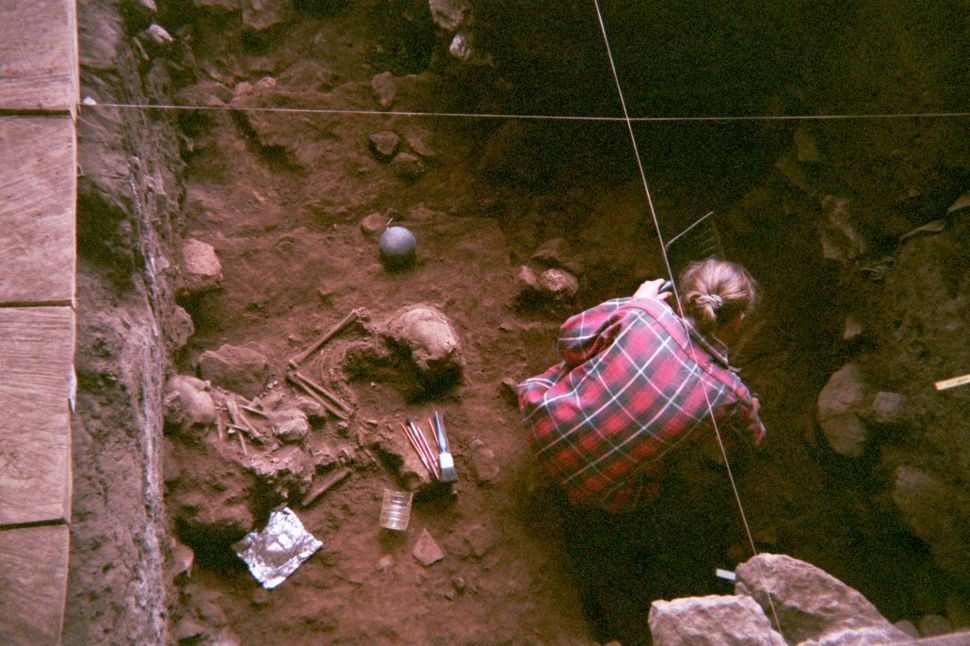

During the Stone Age in what is now western Cameroon, four children who perished before their prime were buried in a natural rock shelter. Now, thousands of years later, an analysis of the ancient DNA found in their bones has revealed secrets about the people who lived there many millennia ago, according to a new study.
Perhaps the most surprising finding is that these children are not related to the modern-day Bantu-speaking cultures that reside in the region today, the researchers said. Rather, the Stone Age youngsters are genetically closer to the present-day hunter-gatherer groups of Central Africa, which are not closely related to Bantu speaking groups, the researchers found.
This realization and others, including that a previously unknown "ghost" population contributed genetically to the people who live in Africa today, is shedding light on what is still the most genetically diverse region for humans in the world today, the researchers said.
Researchers have found countless artifacts and 18 human burials at the Shum Laka rock shelter, which people have used for at least 30,000 years. But the new study focused on the burials of four children, who lived as the Stone Age transitioned into the Metal Age (also called the Stone-to-Metal Age) in western Central Africa.
This included the remains of a 4-year-old boy and a 15-year-old boy found in a double-burial dating to about 8,000 years ago. The researchers also analyzed the DNA of a 4-year-old girl and an 8-year-old boy found in neighboring burials dating to about 3,000 years ago, during the late Stone-to-Metal Age.
Although they lived thousands of years apart, these children were distant cousins, the researchers found. About one-third of their DNA came from ancestors who were more closely related to hunter and gatherers in western Central Africa. The other two-thirds came from an ancient source in West Africa, including a "long lost ghost population of modern humans that we didn't know about before," study senior researcher David Reich, a population geneticist at Harvard University, told Science magazine.
The DNA of these cousins upended a previously held idea. Until now, researchers thought that the Bantu-speaking peoples, which includes several hundred indigenous groups in sub-Saharan Africa, originated in this area of Central Africa, before radiating out across the lower half of Africa, which includes central, western central, eastern and southern Africa. This idea was thought to explain why most of the people from these regions are closely related to each other.
But the new genetic analyses show that's not the case. The inhabitants of Shum Laka were not the ancestors of Bantu-speaking people at least according to the DNA of these four children.
"The finding that the Shum Laka individuals are most related to present day rainforest hunter-gatherers and not ancestors of Bantu-speakers is surprising given that Shum Laka was long considered by archeologist[s] as the site where Bantu-speaker culture [was] developing in situ," Carina Schlebusch, an evolutionary biologist at the University of Uppsala in Sweden, who wasn't involved with the study, told Live Science in an email.
"However, as the authors mentioned in the article, it might be that multiple groups used the site," Schlebusch said. This means that the Bantu's ancestors might have used the site, but it's not shown in these particular burials.
The genetic analyses revealed a handful of other findings about the ancient people of Cameroon. For instance, one of the boy's genomes revealed that he had the oldest branch of the Y chromosome, which shows that the oldest lineage of human males was present in Cameroon for at least 8,000 years, and possibly much longer, the researchers said.
In addition, the analysis suggests that there are at least four major human lineages, which date to between 200,000 and 300,000 years ago. This realization is unique to this dataset, and hasn't been found from previous genetic studies, the researchers said.
The scientists also found another set of four sub-branches of human lineages that date to between 60,000 and 80,000 years ago. This includes the lineage that gave rise to all modern non-Africans, the researchers said.
"It is a nice paper and it is a welcome addition to the growing aDNA [ancient DNA] database of Africa," Schlebusch said. "It is especially valuable to get aDNA from West Africa, where it is well know[n] that the preservation of human remains [is] very bad due to the acidic soils."
That said, the researchers could have done even more with their unique dataset, she said. For instance, they could have visualized effective population sizes over time, Schlebusch said. She added that "the findings regarding the deep African population structure are interesting, but we definitely need more testing of possible models and most probably more aDNA results before we will be able to disentangle signals."
The study, led by scientists at Harvard Medical School, was published online today (Jan. 22) in the journal Nature.